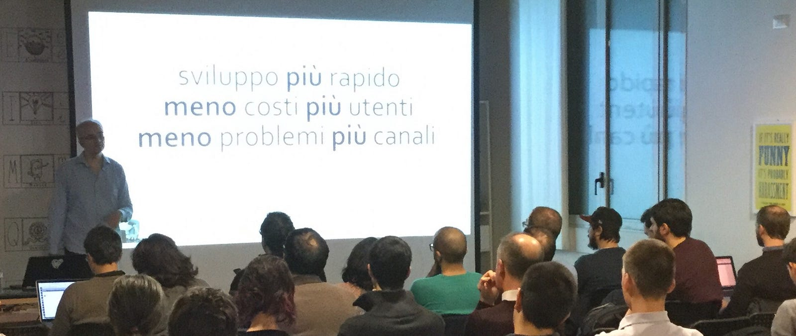

Convcomp Newsletter — marzo 2018
Sul Milano Chatbot Meetup ed altro…

Da questo mese avviamo una newsletter mensile
Il blog www.convcomp.it è senz’altro legato al Milano Chatbot Meetup, ed il perché è spiegato qui: http://www.milanoallnews.it/milano-chatbots-meetup/.
Abbiamo per questo motivo creato una sezione del blog dedicata ai meetup di Milano e ad altri eventi in Italia: https://convcomp.it/milano-chatbot-meetup/home
In questa sezione sono collezionati tutti gli articoli pubblicati sul blog con tag #Milanochatbotmeetup.
Qualche news sui prossimi eventi a Milano, fonte la newsletter di Paolo Montrasio/Milano Chatbot Meetup home page:
I video e le slide dei video del meetup di giovedì 22 febbraio sono linkati in questa pagina.
Il canale You Tube è https://www.youtube.com/c/MilanoChatbots
Se non siete iscritti fatelo adesso così sarete avvisati del caricamento dei video prima ancora che vi arrivino queste mail tramite Meetup.
E’ attivo inoltre un gruppo Telegram: https://t.me/milanochatbots
Ci sono molti eventi in programma nei prossimi 10 giorni:
1. Chatbot con Node-RED e RedBot, giovedì 15 marzo
dettagli: https://www.eventbrite.it/e/biglietti-milano-js-chatbot-con-node-red-e-redbot-43847094841
2. Evento Milano Digital Week, venerdì 16 marzo
Iscrivetevi ai due talk separatamente con i link che seguono. Il programma è:
- Privacy: come il GDPR influirà su innovazione e digitalizzazione (iscrizione), di Alessandro Basile. Utile a sviluppatori e a clienti, non solo per i chatbot. Alle ore 19 nella solita location di via Venini 42.
- Appuntamento con il bot — Semplifichiamo la nuova ospitalità (iscrizione), di Giorgio Sidari. Alle ore 19 nella solita location di via Venini 42.
3. Milano Chatbot Meetup, giovedì 22 marzo — Bot impossibili
Alle ore 19 nella solita location di via Venini 42. Il programma è (Iscrivetevi qui):
- I bot di WhatsApp di Michel Morelli. Sappiamo tutti che non si possono scrivere bot per WhatsApp. E invece no, il modo c’è. Vedremo qual è l’infrastruttura necessaria ed una dimostrazione dal vivo.
- CoT — Chatbots of Things, di Michele Feliciani. Ci presenterà i chatbots al servizio dell’Internet of Things, ossia come unire due nuove tecnologie in rampa di lancio nei prossimi anni.
Informazioni, Idee, richieste, etc.
Fino ad ora il blog ha avuto un taglio sia tecnico sia business sulle applicazioni finali. A fianco della sezione dedicata alle news sugli eventi, prevediamo di creare nuove sezioni specifiche su tecnologia, mercato, ma anche settori di carattere “umanistico” come la linguistica e la psicologia. Cosa ne pensate? Ogni suggerimento è benvenuto.
Per informazioni sul blog convcomp.it, consigli/desiderata/etc. e soprattutto per pubblicare i vostri articoli, potete contattare la redazione all’e-mail: info@convcomp.it. Scriveteci!